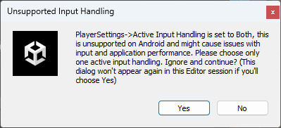
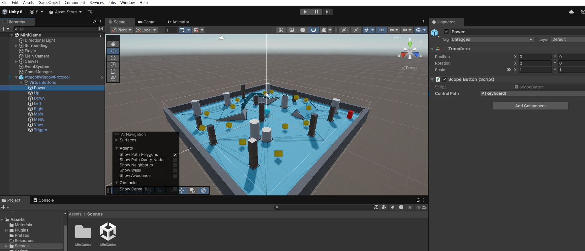

"サンプルデモ"の目次
- 1. サンプルデモ Roll-a-Ball Game for Atmoph Window
- 1.1. 動かし方
- 1.2. 使用しているSDKの機能
- 1.2.1. Scopeのボタン操作の検知 : プレイヤーをScopeのボタンでコントロールできるようにする
- 1.2.2. Scopeのポインティング位置、向き、距離センター値の取得 : 地面の角度をScopeの向きでコントロールできるようにする
- 1.2.3. Scopeのズームリングデータの取得：ズームリング、クォータニオン形式のScopeの向き、ボタン状態の画面出力
- 1.2.4. Scopeの動的情報の取得（接続状態、アドレス、バッテリー残量）：接続状態の画面表示や、バッテリー残量のログ出力
- 1.2.5. Scopeの静的情報の取得(本体型番、シリアルナンバー、FWバージョン、PnPID)
- 1.2.6. Scopeへの振動指示：ボタンを押した際にScopeを振動させる
- 1.2.7. Unityアプリの終了を本体に伝える：ゲーム終了時にYo本体機能に戻る
1. サンプルデモ Roll-a-Ball Game for Atmoph Window
Unityの一般的なサンプルデモ Roll-a-Ball Game をSDKを用いてYoで遊べるようにしたデモです。サンプルデモプロジェクトのScenes/MiniGameに実装されています。
Note
Roll-a-Ball Gameの内容や実装方法については、Unityの公式ドキュメントRoll-a-Ball Game を参照してください。
1.1. 動かし方
1.1.1. UnityHubでUniversal 3D の空プロジェクトを作成する。
1.1.2. プロジェクトにサンプルデモパッケージ"rollaballforatmophwindow_v1_0.unitypackage"をインポートする。
1.1.3. ビルド設定を実施する。
Note
デモにはすでにビルド設定の設定を実施した"New Android Profile"も存在しています。こちらを利用してもらっても構いません。
Note
"Build Profile"の"Configuration" -> "Active Input Handling"は"Both"を設定してください。
Note
デモは SDKのインストール はすでに実施済みの状態になっています。
1.1.4. Projectの"Assets" -> "Scenes" の "MiniGame"を開く
1.1.5. "Build Profiles"の "Scene List" が "MiniGame" のみになるように設定
メニューの"File" -> "Build Profiles"を開き、その"Scene List"項目を開きます。 デフォルトで設定されている "Scenes/SampleScene"を削除します。
"Add Open Scenes" ボタンで "MiniGame" を設定します。
1.1.6. "Build And Run" を実行
メニューの"File" -> "Build And Run"を実行します。
Caution
実行時の次のような警告ダイアログが出る場合がありますが、Yesを選択して無視してください。

Caution
デモの影のジャギーが気になる場合は、"Project Settings" -> "Quality" の "Levels" 項目で、Androidアイコンの設定をデフォルトの "Mobile" から "PC" に切り替えてください。Mobile用品質からPC用品質に変わることで、影の画質が向上してジャギーが軽減します。
1.2. 使用しているSDKの機能
このデモではSDKの次の機能を使用しています。
- Scopeのボタン操作の検知 : プレイヤーをScopeのボタンでコントロールできるようにする
- Scopeのポインティング位置、向き、距離センター値の取得 : 地面の角度をScopeの向きでコントロールできるようにする
- Scopeのズームリングデータの取得：ズームリング、クォータニオン形式のScopeの向き、ボタン状態の画面出力
- Scopeの動的情報の取得（接続状態、アドレス、バッテリー残量）：接続状態の画面表示や、バッテリー残量のログ出力
- Scopeの静的情報の取得(本体型番、シリアルナンバー、FWバージョン、PnPID)：Scope情報のログ出力
- Scopeへの振動指示：ボタンを押した際にScopeを振動させる
- Unityアプリの終了を本体に伝える：ゲーム終了時にYo本体機能に戻る
1.2.1. Scopeのボタン操作の検知 : プレイヤーをScopeのボタンでコントロールできるようにする
WindowProtocol.prefabをHierarchyウィンドウに追加し、その子オブジェクトのVirtualButtonsの子オブジェクトでScopeの各ボタンをInputControlにマッピングしています。マッピング先は次のようになっています。
| オブジェクト | InputControl |
|---|---|
| Power | P [Keyboard] |
| Up | Stick/Up [Joystick] |
| Down | Stick/Down [Joystick] |
| Left | Stick/Left [Joystick] |
| Right | Stick/Right [Joystick] |
| Main | Space [Keyboard] |
| Menu | M [Keyboard] |
| View | V [Keyboard] |
| Trigget | Q [Keyboard] |

1.2.2. Scopeのポインティング位置、向き、距離センター値の取得 : 地面の角度をScopeの向きでコントロールできるようにする
Scripts/SurroundingController.csで使用しています。
void FixedUpdate()
{
// Slightly rotate the floor with Scope's gyroscope
var offset = WindowProtocol.Instance.ScopeOffset.FirstOrDefault().Value;
var data = WindowProtocol.Instance.ScopeConvertedData.FirstOrDefault().Value;
if (data != null && offset != null)
{
var pitch = Mathf.Rad2Deg * (data.pitch - offset.pitch);
var roll = Mathf.Rad2Deg * (data.roll - offset.roll);
var yaw = Mathf.Rad2Deg * (data.yaw - offset.yaw);
var origin = new Vector3(pitch, roll, yaw);
var z = -Mathf.Clamp(pitch * AngleFactorPitch, -AngleLimit, AngleLimit);
var y = 0f; // -Mathf.Clamp(yaw * AngleFactor, -AngleLimit, AngleLimit); // fixed
var x = -Mathf.Clamp(roll * AngleFactorRoll, -AngleLimit, AngleLimit);
var rotation = new Vector3(z, y, x);
rb.MoveRotation(Quaternion.Euler(rotation));
// Debug.Log($"gameObject.transform.eulerAngle: {origin} -> {rotation}");
}
}
WindowProtocol.ScopeConvertedDataプロパティから取得したその時点のScopeのConvertedDataからScopeの角度(ConvertedData.pitch、ConvertedData.yaw、ConvertedData.roll)を取得し、それを基に地面を回転しています。
var data = WindowProtocol.Instance.ScopeConvertedData.FirstOrDefault().Value;
Scopeの「ポインティング位置のリセット」機能にも対応できるように、Offset機能のオフセット値も取得し、ConvertedDataとオフセットとの差分から角度を算出しています。
オフセット値の取得方法はWindowProtocol.ScopeOffset、WindowProtocol.ScopeRawOffset プロパティからのOffsetの取得を使用しています。
var offset = WindowProtocol.Instance.ScopeOffset.FirstOrDefault().Value;
1.2.3. Scopeのズームリングデータの取得：ズームリング、クォータニオン形式のScopeの向き、ボタン状態の画面出力
ScopeRawDataPrinter.csのUpdateメソッドで、接続しているScopeのズームリング、クォータニオン形式のScopeの向き、ボタン状態の情報を持ったRawDataを画面に出力しています。
void Update()
{
var data = Atmoph.ScopeRawData.FirstOrDefault().Value;
textMeshProUGUI.text = (data != null) ? data.ToString() : "";
}
1.2.4. Scopeの動的情報の取得（接続状態、アドレス、バッテリー残量）：接続状態の画面表示や、バッテリー残量のログ出力
GameManager.csのUpdateメソッドで「Powerボタンを押すとバッテリー残量をログに出力」の機能が実装されています。
バッテリー残量のログ出力は次のコードで実装されています。WindowProtocol.ScopeConnectionStateで取得した接続中Scopeのアドレスを用いて、WindowProtocol.GetBatteryLevel(how_to_use.html#1-4-2-バッテリー残量の取得)メソッドでバッテリー残量を取得しています。
else if (current?.pKey?.wasReleasedThisFrame == true)
{
var address = Atmoph.ScopeConnectionState.FirstOrDefault().Key;
if (address != null)
{
Atmoph.Vibrate(new string[]{address}, 123);
Debug.Log($"battery: {WindowProtocol.GetBatteryLevel(address)}");
}
}
接続状態は次の３つの方法で取得されています。
1.2.4.1. WindowProtocol.ScopeConnectionStateプロパティを使用
上記のWindowProtocol.GetBatteryLevelメソッドの引数に設定するScopeアドレスを取得する方法です。
1.2.4.2. WindowProtocol.GetScopesメソッドを使用
GameManager.csのUpdateメソッドの次の処理で使われています。BondedScopeインスタンスで接続状態を一括で取得しています。
Debug.Log($"GetScopes: {Atmoph.GetScopes()}");
1.2.4.3. WindowProtocol.OnConnectionStateChangedEventプロパティにコールバックメソッドを追加する
GameManager.csのSetListenersメソッドで次のようにWindowProtocol.OnConnectionStateChangedEventへのコールバックメソッドの追加、削除が実装されています。Scopeの新規接続、接続解除のタイミングで呼び出されるコールバックメソッドで処理しています。
private void SetListeners(bool state)
{
if (state)
{
Atmoph.OnConnectionStateChangedEvent.AddListener(OnScopeStateChanged);
player.GetComponent<PlayerController>().onTouchedEvent.AddListener(OnPlayerTouched);
}
else
{
Atmoph.OnConnectionStateChangedEvent.RemoveAllListeners();
player.GetComponent<PlayerController>().onTouchedEvent.RemoveAllListeners();
}
}
// Check Connection state changed & Show on screen.
private void OnScopeStateChanged()
{
var state = Atmoph.ScopeConnectionState.FirstOrDefault();
Debug.Log($"OnScopeStateChanged. {state.Key}: {state.Value}");
stateText.text = state.Value ? "Connected" : "Disconnected";
}
1.2.5. Scopeの静的情報の取得(本体型番、シリアルナンバー、FWバージョン、PnPID)
GameManager.csのUpdateメソッドの次の処理で使われています。Atmoph.ScopeConnectionStateで取得した接続中Scopeのアドレスを用いて、WindowProtocol.GetScopeInfo(how_to_use.html#1-5-scopeの静的情報の取得本体型番シリアルナンバーfwバージョンpnpid)メソッドでScopeの静的情報を取得、ログに出力しています。
else if (current?.mKey?.wasPressedThisFrame == true)
{
Debug.Log($"GetScopes: {Atmoph.GetScopes()}");
var address = Atmoph.ScopeConnectionState.FirstOrDefault().Key;
if (address != null)
Debug.Log($"GetScopeInfo: {Atmoph.GetScopeInfo(address)}");
}
1.2.6. Scopeへの振動指示：ボタンを押した際にScopeを振動させる
GameManager.csのUpdateメソッドで「Power、風景ボタンを押すとScopeが振動」の機能が実装されています。 Powerボタンが押された際は WindowProtocol.Vibrate、風景ボタンが押された際は WindowProtocol.VibrateToAllでScopeに振動を指示しています。
else if (current?.pKey?.wasReleasedThisFrame == true)
{
var address = Atmoph.ScopeConnectionState.FirstOrDefault().Key;
if (address != null)
{
Atmoph.Vibrate(new string[]{address}, 123);
Debug.Log($"battery: {Atmoph.GetBatteryLevel(address)}");
}
}
else if (current?.vKey?.wasReleasedThisFrame == true)
Atmoph.VibrateToAll(123);
1.2.7. Unityアプリの終了を本体に伝える：ゲーム終了時にYo本体機能に戻る
GameManager.csのUpdateメソッドで「トリガーボタンを押すとゲーム終了」の機能が実装されています。WindowProtocol.GoBackToWindowメソッドでゲームの終了をYo本体に伝えた上で、ゲームの終了処理を実施しています。
else if (current?.qKey?.wasReleasedThisFrame == true)
{
Atmoph.GoBackToWindow();
QuitGame();
}
Note
ゲームの終了処理はゲーム自身で行う必要があります。